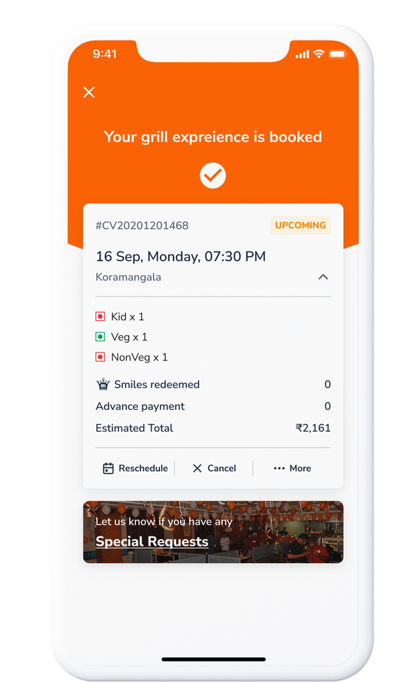
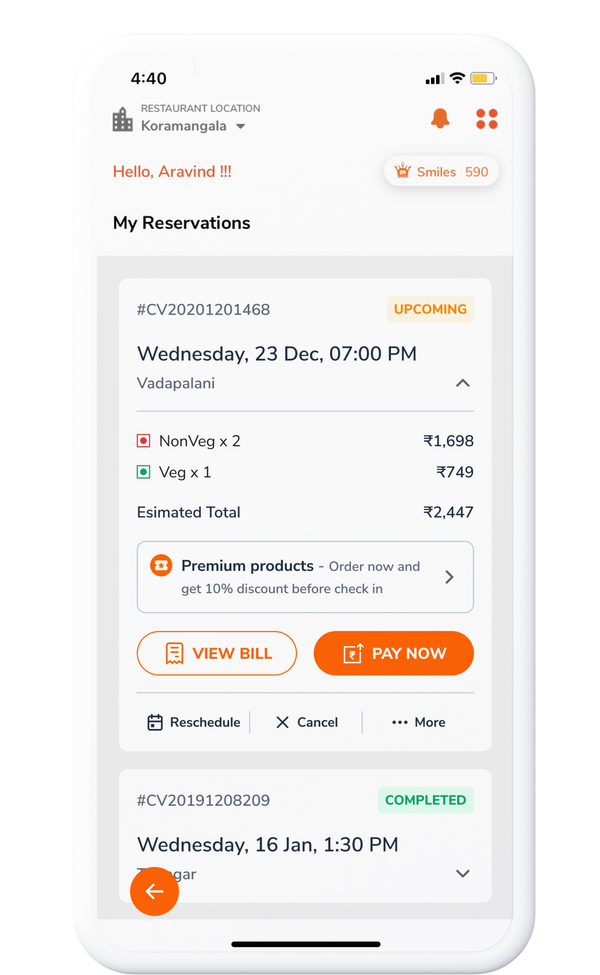
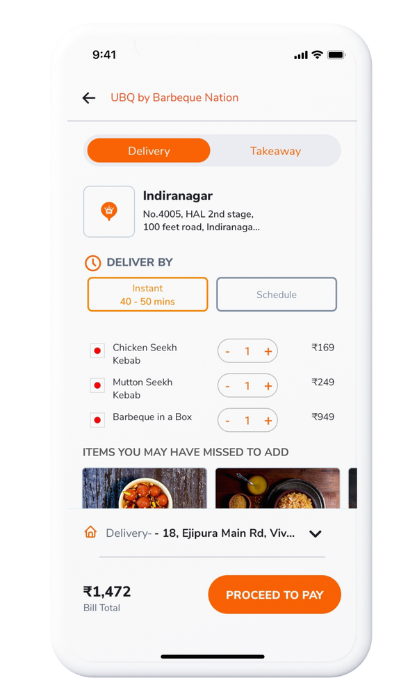
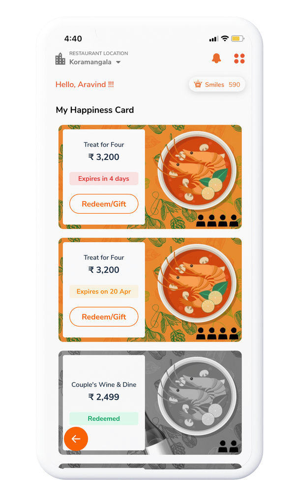
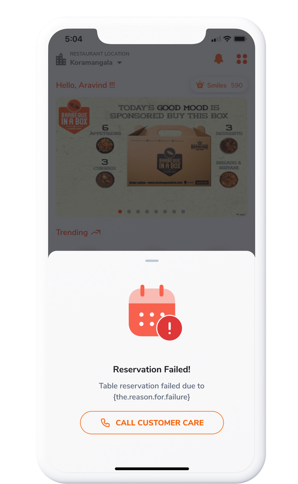

The checkout wasn't broken. It was just one step too long.
The checkout wasn't broken. It was just one step too long. And that step was costing orders.
This was a high-traffic food app. People came in hungry, with intent — they'd already decided to order. By the time they reached checkout, the job of the design was simple: get out of the way. Instead, the flow asked them to make a decision they weren't ready to make yet, at the exact moment their motivation was highest and their patience was lowest.
I pulled the funnel data. There was a clear, measurable drop at one specific step. Not a mystery — a number.
The full redesign nobody needed yet
The team wanted a full redesign. I argued for a single change first. We had a tense conversation about it.
A full redesign is satisfying to scope and easy to sell internally — it looks like progress. But it also takes months, introduces a dozen new variables, and makes it impossible to know which change actually moved the metric. I didn't want a prettier checkout. I wanted to know whether removing one step would do most of the work a full redesign was being asked to do.
So we agreed to test the small change first. If it didn't move the numbers, the redesign was back on the table — with better information.
One decision, moved
We removed the delivery time selector from the main checkout flow and moved it to confirmation. That's it. One decision.
The insight was that people didn't need to choose a delivery time before paying — they needed to choose it before the food arrived. Those are different moments. By moving the selector to confirmation, we let people complete the high-intent action (pay) without interruption, then handle the lower-stakes detail (timing) once they were already committed.
"Sometimes the right design move is to do less than everyone expects you to do."



What happened
12% more orders completed. 20% faster to checkout. Over three months, with one change that took a fraction of the time a full redesign would have. The redesign conversation didn't go away — but now it could be about the things that actually still needed fixing, not the one step we already knew was the problem.


Do less than everyone expects
Sometimes the right design move is to do less than everyone expects you to do. The hard part isn't finding the small change — it's holding the line on it when a bigger, more impressive-looking project is sitting right there. The data gave me the confidence to have that tense conversation. It's a lot easier to argue for restraint when you can point at a number.